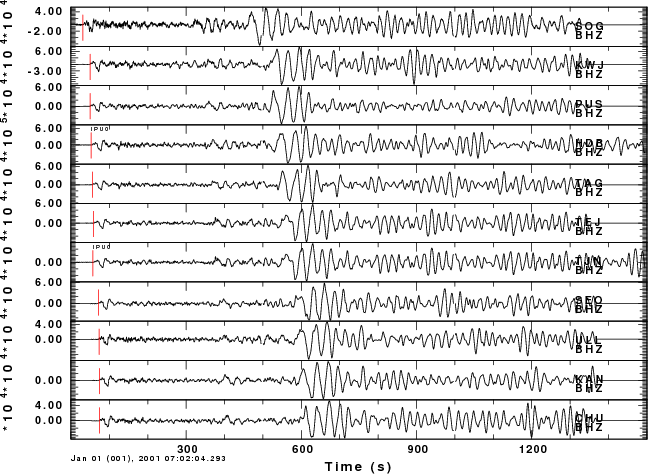

This exercise shows how to estimate phase velocities beneath a
network from a teleseismic surface wave signal observed by all
stations. The concept is to assume that the Earth structure
beneath the seismic network is uniform and that the incident
wavefront from the distance source follows a great circle path so
that the signal arrivals at two stations at the same distance at the
same time. The analysis essentially projects the observed waveforms
onto a linear array in the center of the network and the p-omega
stacking is then performed.
In order to do this, data
processing must account for the requirements of the stacking program
sacpom96 (which is called by the GUI do_pom). First the
traces must be of the same length, second, the traces must be
resampled to a lower sample rate for efficiency in the stacking (to
make the fast Fourier transforms faster because the number of points
is smaller), the fundamental mode surface wave must be isolated for a
good stack (using the GUI do_mft which calls sacmft96
to determine the group velocity dispersion and then sacmat96
to isolate the fundamental mode. Finally do_pom cat be run.
The data set used for this tutorial is Sac.tgz
Download this file and unpack is using the command
gunzip -c Sac.tgz | tar xvf -
This will create a subdirectory Sac and place the waveform forms in
that directory.
Since these SAC files are coming from an Intel
machine, you must make sure that the files are in the correct byte
order by performing the commands
cd Sac
for i in *Sac
do
saccvt -I < $i > tmp
mv tmp $i
done
Now you can work with the data
You must put the event information into the trace headers. you can do this using gsac as follows (I assume that you are in the Sac directory)
gsac
GSAC - Computer Programs in Seismology [V1.1.21 13 SEP 2007]
Copyright 2004, 2005, 2006, 2007 R. B. Herrmann
GSAC> r *Z.Sac CHUBHZ.Sac HDBBHZ.Sac KANBHZ.Sac KWJBHZ.Sac PUSBHZ.Sac SEOBHZ.Sac SOGBHZ.Sac TAGBHZ.Sac TEJBHZ.Sac TJNBHZ.Sac ULLBHZ.Sac GSAC> ch evla 6.898 evlo 126.579 evdp 33 GSAC> ch ocal 2001 01 01 06 57 01 172 GSAC> wh GSAC> quit
Since I assume that the trace headers
already had the station
latitude and longitude fields set (STLA and STLO), the trace headers
will now have the DIST, GCARC, AZ and BAZ fields set.
If I
have GMT installed, I can do the following from within gsac
GSAC> r *Z.Sac CHUBHZ.Sac HDBBHZ.Sac KANBHZ.Sac KWJBHZ.Sac PUSBHZ.Sac SEOBHZ.Sac SOGBHZ.Sac TAGBHZ.Sac TEJBHZ.Sac TJNBHZ.Sac ULLBHZ.Sac GSAC> map r on r on Execute using the command: sh map.sh GSAC> sh map.sh sh map.sh pscoast: Working on block # 301 pscoast: Adding Borders... GSAC>
The file map.eps is created and you can view it using gs, display or other PostScript viewers. You will see the following: map.png
The next step is to view the traces and to examining the header for the sample interval since the analysis requires that all traces have the same sample interval, DELTA, and the same number of points. Note that these traces are the original digital data. The instrument response has not been removed. Normally deconvolution is necessary, but if the instruments have identical response, then deconvolution is not necessary. Such is the case for these data.
GSAC> r *Z.Sac
CHUBHZ.Sac HDBBHZ.Sac KANBHZ.Sac KWJBHZ.Sac PUSBHZ.Sac SEOBHZ.Sac SOGBHZ.Sac TAGBHZ.Sac TEJBHZ.Sac TJNBHZ.Sac ULLBHZ.Sac
GSAC> sort up dist
Sorting on DIST in ascending order
GSAC> lh delta npts
SOGBHZ.Sac (6):
NPTS 6601 DELTA 0.2
KWJBHZ.Sac (3):
NPTS 6601 DELTA 0.2
PUSBHZ.Sac (4):
NPTS 6601 DELTA 0.2
HDBBHZ.Sac (1):
NPTS 80001 DELTA 0.05
TAGBHZ.Sac (7):
NPTS 6601 DELTA 0.2
TEJBHZ.Sac (8):
NPTS 6601 DELTA 0.2
TJNBHZ.Sac (9):
NPTS 80001 DELTA 0.05
SEOBHZ.Sac (5):
NPTS 6601 DELTA 0.2
ULLBHZ.Sac (10):
NPTS 6601 DELTA 0.2
KANBHZ.Sac (2):
NPTS 6601 DELTA 0.2
CHUBHZ.Sac (0):
NPTS 6601 DELTA 0.2
GSAC> p
You will not the different sampling intervals and the different
number of points, The command "p" plots the
traces:
We use this figure to design the cut to isolate the signal and then we resample to a DELTA=0.5 sec with the following commands
GSAC> r *Z.Sac CHUBHZ.Sac HDBBHZ.Sac KANBHZ.Sac KWJBHZ.Sac PUSBHZ.Sac SEOBHZ.Sac SOGBHZ.Sac TAGBHZ.Sac TEJBHZ.Sac TJNBHZ.Sac ULLBHZ.Sac GSAC> rtr GSAC> w CHUBHZ.Sac HDBBHZ.Sac KANBHZ.Sac KWJBHZ.Sac PUSBHZ.Sac SEOBHZ.Sac SOGBHZ.Sac TAGBHZ.Sac TEJBHZ.Sac TJNBHZ.Sac ULLBHZ.Sac GSAC> synchronize o GSAC> wh GSAC> cuterr fillz GSAC> cut o 300 o 1800 cut o 300 o 1800 O 300.000000 O 1800.000000 GSAC> r *Z.Sac CHUBHZ.Sac HDBBHZ.Sac KANBHZ.Sac KWJBHZ.Sac PUSBHZ.Sac SEOBHZ.Sac SOGBHZ.Sac TAGBHZ.Sac TEJBHZ.Sac TJNBHZ.Sac ULLBHZ.Sac GSAC> lp c 1 n 2 p 2 LP: corner fc 1.000000 npoles 2 pass 2 Butterworth GSAC> interpolate delta 0.5 delta 0.5 GSAC> cd .. Current directory is /home/rbh/PROGRAMS.310t/PROGRAMS.330.fixups/TUTORIAL/POMEGA GSAC> mkdir GOOD mkdir GOOD GSAC> cd GOOD Current directory is /home/rbh/PROGRAMS.310t/PROGRAMS.330.fixups/TUTORIAL/POMEGA/GOOD GSAC> w CHUBHZ.Sac HDBBHZ.Sac KANBHZ.Sac KWJBHZ.Sac PUSBHZ.Sac SEOBHZ.Sac SOGBHZ.Sac TAGBHZ.Sac TEJBHZ.Sac TJNBHZ.Sac ULLBHZ.Sac GSAC> pwd pwd /home/rbh/PROGRAMS.310t/PROGRAMS.330.fixups/TUTORIAL/POMEGA/GOOD GSAC>
This is what was done. Read the traces and remove and linear
trend, and then write the traces out. Reset the time reference as the
origin time using synchronize. Then plot the trace and see
that the surface wave is in the window 300 to 1800 seconds after the
origin time. Reread and add zeros to the beginning and end of traces
if necessary. The low pass filter with a zero phase filter at 1.0 Hz,
and finally interpolate to a sample of 0.5 seconds.
Since
I do not want to destroy the original data, I create a new directory
parallel to the Sac directory with the SHELL command cd ..
followed by mkdir GOOD. We then move from the current
directory to that new directory and write the traces there. If
I read these new traces in I see the following with a lh npts
delta
GSAC> lh npts delta
SOGBHZ.Sac (6):
NPTS 3001 DELTA 0.5
KWJBHZ.Sac (3):
NPTS 3001 DELTA 0.5
PUSBHZ.Sac (4):
NPTS 3001 DELTA 0.5
HDBBHZ.Sac (1):
NPTS 3001 DELTA 0.5
and the plot

In the GOOD directory, issue the command
do_mft *Z.Sac
Then select one trace, TAG, for example, and run do_mft and select
the dispersion curve. Since this is a large earthquake, I instruct
do_mft to look at periods between 4 and 300 seconds. I select
dispersion between 20 and 200 seconds:
Now hit the Match button. on the next page, select Match and then Fund for the fundamental mode. Then select No and then Quit
If you look at the
console, you will see the following command when do_mft started
the phase match filter program sacmat96
/home/rbh/PROGRAMS.310t/PROGRAMS.330/bin/sacmat96 -F TAGBHZ.Sac -D disp.d -AUTO
We will use this as a prototype to phase match all traces through a
SHELL script. The reason for doing it this way is that there is no
certainty that all traces will have the
same range of dispersion
periods for and individual phase match filter. So create the
script DOIT. make it executable and run in the GOOD directory
which also has the disp.d dispersion file. Here is DOIT
#!/bin/sh
for i in *Z.Sac
do
sacmat96 -F $i -D disp.d -AUTO
done
No after you execute it you see the following files in the GOOD directory
CHUBHZ.Sac disp.out KANBHZ.Sacr mft96.ctl PUSBHZ.Sac SOGBHZ.Sac TEJBHZ.Sac ULLBHZ.Sac
CHUBHZ.Sacr DOIT* KANBHZ.Sacs mft96.disp PUSBHZ.Sacr SOGBHZ.Sacr TEJBHZ.Sacr ULLBHZ.Sacr
CHUBHZ.Sacs HDBBHZ.Sac KWJBHZ.Sac mft96.ods PUSBHZ.Sacs SOGBHZ.Sacs TEJBHZ.Sacs ULLBHZ.Sacs
disp.d HDBBHZ.Sacr KWJBHZ.Sacr MFT96.PLT SEOBHZ.Sac TAGBHZ.Sac TJNBHZ.Sac
disp.dp HDBBHZ.Sacs KWJBHZ.Sacs P001.PLT SEOBHZ.Sacr TAGBHZ.Sacr TJNBHZ.Sacr
disp.dv KANBHZ.Sac MFT96CMP P002.eps SEOBHZ.Sacs TAGBHZ.Sacs TJNBHZ.Sacs
The files ending in .Sacs are the isolated
fundamental
mode. The sum of the traces .Sacs and .Sacr
gives the original trace. If you read the *Z.Sacs and plot
under gsac you will see
Notice
how the body waves and scatter surface waves have been removed.
In the directory GOOD run the command
do_pom *Z.Sacs
Hit the commands SelectAll, Do Pom on page 1,
then select 4 and 200 for the period limits, Shade
on, Type Rayleigh, Nray 250, and Length 4
followed by Do Pom on page 2, and wait. You will then be
presented with a editing screen to select the phase velocities. Then
save the dispersion by clicking on Exit and then Yes.
The output dispersion is in the file disp.d which is in a surf96
dispersion format. The dispersion plot with selected dispersion
is
Here
are some of the dispersion points
SURF96 R C X 0 86.23 4.21690 0.24200 10.7102
SURF96 R C X 0 80.31 4.22890 0.19760 10.7777
SURF96 R C X 0 84.45 4.22890 0.22800 10.7340
SURF96 R C X 0 81.92 4.24100 0.20980 10.7623
SURF96 R C X 0 128 4.28920 0.49920 10.4922
SURF96 R C X 0 130 4.33730 0.52780 10.4752
SURF96 R C X 0 132.1 4.38550 0.55780 10.4582
SURF96 R C X 0 134.3 4.42170 0.58610 10.4410
SURF96 R C X 0 136.5 4.46990 0.61910 10.4236
SURF96 R C X 0 138.9 4.51810 0.65350 10.4064
SURF96 R C X 0 141.2 4.55420 0.68550 10.3900
You will notice that the dispersion is not perfectly uniform. This
may be due to the fact that the path from the earthquake to each
station may have slightly different propagation which violated our
assumption of circular wavefronts.
Perform this
operation for a numebr of earthquakes, from different regions, so
that you get a good sampling of the dispersion.
Last changed March 11,
2009